СТРОИТЕЛЬНЫЕ НОРМЫ И ПРАВИЛА
ГЕОДЕЗИЧЕСКИЕ РАБОТЫ В
СТРОИТЕЛЬСТВЕ
СНиП 3.01.03-84
ГОСУДАРСТВЕННЫЙ КОМИТЕТ СССР
ПО ДЕЛАМ СТРОИТЕЛЬСТВА
МОСКВА 1985
РАЗРАБОТАНЫ ЦНИИОМТП Госстроя СССР (кандидаты техн. наук В.С. Сытник, С.Е. Чакулаев) с участием НИИОСП им. Н.М. Герсеванова Госстроя СССР (канд. техн. наук Е.М. Перепонова), НИИПГ ГУГК (канд. техн. наук Н.С. Чирятьев), треста Мосоргстрой Главмосстроя при Мосгорисполкоме (канд. техн. наук В.Д. Фельдман).
ВНЕСЕНЫ ЦНИИОМТП Госстроя СССР.
ПОДГОТОВЛЕНЫ К УТВЕРЖДЕНИЮ Главтехнормированием Госстроя СССР (Д.И. Прокофьева).
С введением в действие СНиП 3.01.03-84 «Геодезические работы в строительстве» утрачивает силу СНиП III-2-75 «Геодезические работы в строительстве».
При пользовании нормативным документом следует учитывать утвержденные изменения строительных норм и правил и государственных стандартов, публикуемые в журнале «Бюллетень строительной техники» Госстроя СССР и информационном указателе «Государственные стандарты СССР» Госстандарта.
|
Государственный комитет СССР по делам строительства (Госстрой СССР) |
Строительные нормы и правила |
СНиП 3.01.03-84 |
|
Геодезические работы в строительстве |
Взамен |
Настоящие правила производства и приемки геодезических работ необходимо соблюдать при строительстве новых, расширении, реконструкции и техническом перевооружении действующих предприятий, зданий и сооружений.
В зависимости от конструктивных особенностей и назначения объектов строительства необходимо соблюдать требования к производству геодезических работ, приведенные в других строительных нормах и правилах, государственных стандартах системы обеспечения точности геометрических параметров в строительстве, ведомственных нормативных документах и документах органов государственного надзора, согласованных и утвержденных в установленном порядке. Необходимо также соблюдать дополнительные требования, предусмотренные проектной документацией.
1.1. Геодезические работы в строительстве следует выполнять в объеме и с точностью, обеспечивающими при размещении и возведении объектов строительства соответствие геометрических параметров проектной документации, требованиям строительных норм, правил и государственных стандартов.
1.2. В состав геодезических работ, выполняемых на строительной площадке, входят:
а) создание геодезической разбивочной основы для строительства, включающей построение разбивочной сети строительной площадки и вынос в натуру основных или главных разбивочных осей зданий и сооружений (для крупных и сложных объектов и зданий выше 9 этажей - построение внешних разбивочных сетей зданий, сооружений), магистральных и внеплощадочных линейных сооружений, а также для монтажа технологического оборудования;
|
Внесены ЦНИИОМТП Госстроя СССР |
Утверждены постановлением Государственного комитета СССР по делам строительства от 4 февраля 1985 г. № 15 |
Срок введения в действие |
б) разбивка внутриплощадочных, кроме магистральных, линейных сооружений или их частей, временных зданий (сооружений);
в) создание внутренней разбивочной сети здания (сооружения) на исходном и монтажном горизонтах и разбивочной сети для монтажа технологического оборудования, если это предусмотрено в проекте производства геодезических работ или в проекте производства работ, а также производство детальных разбивочных работ;
г) геодезический контроль точности геометрических параметров зданий (сооружений) и исполнительные съемки с составлением исполнительной геодезической документации;
д) геодезические измерения деформаций оснований, конструкций зданий (сооружений) и их частей, если это предусмотрено проектной документацией, установлено авторским надзором или органами государственного надзора.
Методы и требования к точности геодезических измерений деформаций оснований зданий (сооружений) следует принимать по ГОСТ 24846-84.
Создание геодезической разбивочной основы для строительства и геодезические измерении деформаций оснований, конструкций зданий (сооружений) и их частей в процессе строительства являются обязанностью заказчика.
Производство геодезических работ в процессе строительства, геодезический контроль точности геометрических параметров зданий (сооружений) и исполнительные съемки входят в обязанности подрядчика.
1.3. Геодезические работы являются неотъемлемой частью технологического процесса строительного производства, и их следует осуществлять по единому для данной строительной площадки графику, увязанному со сроками выполнения общестроительных, монтажных и специальных работ.
1.4. При строительстве крупных и сложных объектов, а также зданий выше 9 этажей следует разрабатывать проекты производства геодезических работ в порядке, установленном для разработки проектов производства работ.
1.5. До начала выполнения геодезических работ на строительной площадке рабочие чертежи, используемые при разбивочных работах, должны быть проверены в части взаимной увязки размеров, координат и отметок (высот) и разрешены к производству техническим надзором заказчика.
1.6. Геодезические работы следует выполнять средствами измерений необходимой точности.
Условия обеспечения точности выполнения геодезических работ приведены в обязательных приложениях 1-5.
Геодезические работы при строительстве линейных сооружений, монтаже подкрановых путей, вертикальной планировке следует выполнять преимущественно лазерными приборами.
Геодезические приборы должны быть поверены и отъюстированы. Организацию проведения поверок следует осуществлять в соответствии с ГОСТ 8.002-71.
1.7. Геодезические работы следует выполнять после предусмотренной проектной документацией расчистки территории, освобождения ее от строений, подлежащих сносу, и, как правило, вертикальной планировки. Для перенесения координат геодезических пунктов на монтажные горизонты методом вертикального проектирования следует использовать лифтовые шахты и технологические или специальные отверстия в перекрытиях размером не менее 15 ´ 15 см, предусматриваемые рабочими чертежами.
2.1. Геодезическую разбивочную основу для строительства следует создавать в виде сети закрепленных знаками геодезических пунктов, определяющих положение здания (сооружения) на местности и обеспечивающих выполнение дальнейших построений и измерений в процессе строительства с наименьшими затратами и необходимой точностью.
2.2. Геодезическую разбивочную основу для строительства надлежит создавать с привязкой к имеющимся в районе строительства пунктам геодезических сетей.
2.3. Работы по построению геодезической разбивочной основы для строительства следует выполнять по проекту (чертежу), составленному на основе генерального плана и стройгенплана объекта строительства. В составе проекта должны быть разбивочный чертеж, каталоги координат и отметок исходных пунктов и каталоги (ведомости) проектных координат и отметок, чертежи геодезических знаков, пояснительная записка с обоснованием точности построения геодезической разбивочной основы для строительства.
Разработку проекта (чертежа) геодезической разбивочной основы для строительства следует выполнять в порядке и сроки, соответствующие принятым стадиям проектирования и очередям строительства.
Чертеж геодезической разбивочной основы следует составлять в масштабе генерального плана строительной площадки.
2.4. Геодезическую разбивочную основу для строительства следует создавать с учетом:
проектного и существующего размещений зданий (сооружений) и инженерных сетей на строительной площадке;
обеспечения сохранности и устойчивости знаков, закрепляющих пункты разбивочной основы;
геологических, температурных, динамических процессов и других воздействий в районе строительства, которые могут оказать неблагоприятнее влияние на качество построения разбивочной основы;
использования создаваемой геодезической разбивочной основы в процессе эксплуатации построенного объекта, его расширения и реконструкции.
2.5. Разбивочная сеть строительной площадки создается для выноса в натуру основных или главных разбивочных осей здания (сооружения), а также при необходимости построения внешней разбивочной сети здания (сооружения), производства исполнительных съемок.
Внешняя разбивочная сеть здания (сооружения) создается для перенесения в натуру и закрепления проектных параметров здания (сооружения), производства детальных разбивочных работ и исполнительных съемок.
2.6. Плановую разбивочную сеть строительной площадки следует создавать в виде:
а) красных или других линий регулирования застройки;
б) строительной сетки, как правило, с размерами сторон 50, 100, 200 м и других видов геодезических сетей.
Схемы разбивочной сети строительной площадки приведены в справочном приложении 6.
2.7. Внешнюю разбивочную сеть здания (сооружения) следует создавать в виде геодезической сети, пункты которой закрепляют на местности основные (главные) разбивочные оси, а также углы здания (сооружения), образованные пересечением основных разбивочных осей (см. справочное приложение 6).
2.8. Нивелирные сети строительной площадки и внешней разбивочной сети здания (сооружения) необходимо создавать в виде нивелирных ходов, опирающихся не менее чем на два репера геодезической сети.
Пункты нивелирной и плановой разбивочных сетей, как правило, следует совмещать.
2.9. Построение геодезической разбивочной основы для строительства следует производить методами триангуляции, полигонометрии, геодезических ходов, засечек и другими методами.
2.10. Точность построения разбивочной сети строительной площадки следует принимать соответственно данным, приведенным в табл. 1, внешней разбивочной сети здания (сооружения), в том числе вынос основных или главных разбивочных осей, - в табл. 2.
2.11. Закрепление пунктов геодезической разбивочной основы для строительства надлежит выполнять в соответствии с требованиями нормативных документов по геодезическому обеспечению строительства, утвержденных в установленном порядке.
Знаки закрепления основных или главных разбивочных осей зданий (сооружений) приведены в рекомендуемых приложениях 7-11.
Таблица 1
|
Величины средних квадратических погрешностей построения разбивочной сети строительной площадки |
|||
|
угловые измерения, с |
линейные измерения |
определение превышения на 1 км хода, мм |
|
|
Предприятия и группы зданий (сооружений) на участках площадью более 1 км2; отдельно стоящие здания (сооружения) с площадью застройки более 100 тыс. м2 |
3 |
1 25000 |
4 |
|
Предприятия и группы зданий (сооружений) на участках площадью менее 1 км2; отдельно стоящие здания (сооружения) с площадью застройки от 10 до 100 тыс. м2 |
5 |
1 10000 |
6 |
|
Отдельно стоящие здания (сооружения) с площадью застройки менее 10 тыс. м2; дороги, инженерные сети в пределах застраиваемых территорий |
10 |
1 5000 |
10 |
|
Дороги, инженерные сети внезастраиваемых территорий; земляные сооружения, в том числе вертикальная планировка |
30 |
1 2000 |
15 |
2.12. Места закладки геодезических знаков должны быть указаны на стройгенплане проекта организации строительства, а также на чертежах, необходимых для производства работ по планировке и застройке территории строительства.
2.13. Заказчик обязан создать геодезическую разбивочную основу для строительства и не менее чем за 10 дней до начала выполнения строительно-монтажных работ передать поэтапно подрядчику техническую документацию на нее и закрепленные на площадке строительства пункты основы, в том числе:
а) знаки разбивочной сети строительной площадки;
б) плановые (осевые) знаки внешней разбивочной сети здания (сооружения) в количестве ни менее четырех на каждую ось, в том числе знаки, определяющие точки пересечения основных разбивочных осей всех углов здания (сооружения); количество разбивочных осей, закрепляемых осевыми знаками, следует определять с учетом конфигурации и размеров здания (сооружения); на местности следует закреплять основные разбивочные оси, определяющие габариты здания (сооружения), и оси в местах температурных (деформационных) швов, главные оси гидротехнических и сложных инженерных сооружений;
в) плановые (осевые) знаки линейных сооружений, определяющие ось, начало, конец трассы, колодцы (камеры), закрепленные на прямых участках не менее чем через 0,5 км и на углах поворота трассы;
г) нивелирные реперы по границам и внутри застраиваемой территории у каждого здания (сооружения) не менее одного, вдоль осей инженерных сетей не реже чем через 0,5 км;
д) каталоги координат, высот и абрисы всех пунктов геодезической разбивочной основы.
Таблица 2
|
Величины средних квадратических погрешностей построения внешней и внутренней разбивочных сетей здания (сооружения) и других разбивочных работ |
||||||
|
линейные измерения |
угловые измерения, с |
определение превышения на станции, мм |
определение отметки на монтажном горизонте относительно исходного, мм |
передача точек, осей по вертикали, мм |
||
|
1 |
2 |
3 |
4 |
5 |
6 |
|
|
Металлические конструкции с фрезерованными контактными поверхностями; сборные железобетонные конструкции, монтируемые методом самофиксации в узлах; сооружения высотой св. 100 до 120 м или с пролетами св. 30 до 36 м |
1 15000 |
5 |
1 |
Числовые значения погрешностей следует назначать в зависимости от высоты монтажного горизонта (согласно обязательным приложениям 4 и 5) |
||
|
Здания св. 15 этажей, сооружения высотой св. 60 до 100 м или с пролетами св. 18 до 30 м |
1 10000 |
10 |
2 |
- |
- |
|
|
Здания св. 6 до 15 этажей, сооружения высотой св. 15 до 60 м или с пролетами св. 6 до 18 м |
1 5000 |
20 |
2,6 |
- |
- |
|
|
Здания до 5 этажей, сооружения высотой до 15 м или с пролетами до 6 м |
1 3000 |
30 |
3 |
- |
- |
|
|
Конструкции из дерева; инженерные сети, дороги, подъездные пути |
1 2000 |
30 |
5 |
- |
- |
|
|
Земляные сооружения, в том числе вертикальная планировка |
1 1000 |
45 |
10 |
- |
- |
|
Примечания: 1. Величины средних квадратических погрешностей (гр. 2 - 4) назначаются в зависимости от наличия одной из характеристик, указанных в гр. 1; при наличии двух и более характеристик величины средних квадратических погрешностей назначаются по той характеристике, которой соответствует более высокая точность.
2. Точность геодезических построений для строительства уникальных и сложных объектов и монтажа технологического оборудования следует определять расчетами на основе специальных технических условий и с учетом особых требований к допускам, предусматриваемых проектом.
2.14. Приемку геодезической разбивочной основы для строительства следует оформлять актом (согласно обязательному приложению 12).
2.15. Принятые знаки геодезической разбивочной основы в процессе строительства должны находиться под наблюдением за сохранностью и устойчивостью и проверяться инструментально не реже двух раз в год (в весенний и осенне-зимний периоды).
3.1. Разбивочные работы в процессе строительства должны обеспечивать вынос в натуру от пунктов геодезической разбивочной основы с заданной точностью осей и отметок, определяющих в соответствии с проектной документацией положение в плане и по высоте частей и конструктивных элементов зданий (сооружений).
3.2. Точность разбивочных работ в процессе строительства следует принимать, руководствуясь данными, приведенными в табл. 2.
В случаях строительства по проектной документации, содержащей допуски на изготовление и возведение конструкций зданий (сооружений), не предусмотренные стандартами, нормами и правилами, необходимую точность разбивочных работ следует определять специальными расчетами по условиям, заложенным в проектной документации.
Если два или несколько зданий (сооружений) связаны единой технологической линией или конструктивно, расчет точности разбивочных работ следует выполнять как для одного здания (сооружения).
3.3. Разбивочные работы для монтажа технологического оборудования и строительных конструкций необходимо выполнять с точностью, обеспечивающей соблюдение допусков, предусмотренных соответствующими нормами и правилами, государственными стандартами или техническими условиями, а также проектной документацией.
3.4. Непосредственно перед выполнением разбивочных работ исполнитель должен проверить неизменность положения знаков разбивочной сети здания (сооружения) путем повторных измерений элементов сети.
3.5. При устройстве фундаментов зданий (сооружений), а также инженерных сетей разбивочные оси следует переносить на обноску или на другое устройство для временного закрепления осей. Вид обноски и место ее расположения следует указывать на схеме размещения знаков.
3.6. Разбивочные оси, монтажные (ориентирные) риски следует наносить от знаков внешней или внутренней разбивочных сетей здания (сооружения) . Количество разбивочных осей, монтажных рисок, маяков, места их расположения, способ закрепления следует указывать в проекте производства работ или в проекте производства геодезических работ.
3.7. Внутренняя разбивочная сеть здания (сооружения) создается в виде сети геодезических пунктов на исходном и монтажных горизонтах здания (сооружения). Схема внутренней разбивочной сети здания на исходном горизонте приведена в справочном приложении 6.
Вид, схему, точность, способ закрепления пунктов внутренней разбивочной сети здания (сооружения) следует приводить в проекте производства работ или в проекте производства геодезических работ.
3.8. Точность построения внутренней разбивочной сети здания (сооружения) следует принимать, руководствуясь данными, приведенными в табл. 2.
3.9. Создание внутренней разбивочной сети здания (сооружения) на исходном горизонте следует выполнять с привязкой к пунктам внешней разбивочной сети, а на монтажном горизонте - к пунктам внутренней разбивочной сети исходного горизонта.
3.10. Правильность выполнения разбивочных работ должна проверяться путем проложения контрольных геодезических ходов (в направлениях, не совпадающих с принятыми при разбивке) с точностью не ниже, чем при разбивке. Предельные (допустимые) отклонения d следует определять по формуле
d = tm,
где t - величина, равная 2; 2,5; 3; определяется при разработке проекта производства работ или проекта производства геодезических работ;
m - средняя квадратическая погрешность; принимается по табл. 2.
3.11. Передачу точек плановой внутренней разбивочной сети здания (сооружения) с исходного на монтажный горизонт следует выполнять методами наклонного или вертикального проектирования (проецирования) в зависимости от высоты здания (сооружения) и его конструктивных особенностей (согласно обязательному приложению 5).
3.12. Точность передачи точек плановой внутренней разбивочной сети здания (сооружения) с исходного на монтажный горизонт следует контролировать путем сравнения расстояний и углов между соответствующими пунктами исходного и монтажного горизонтов.
3.13. Высотную разбивку положения конструкций здания (сооружения), а также перенесение отметок с исходного горизонта на монтажный, как правило, следует выполнять методом геометрического нивелирования или другим методом, обеспечивающим соответствующую точность, от реперов разбивочной сети здания (сооружения). Количество реперов, от которых переносятся отметки, должно быть не менее двух.
3.14. При выполнении работ по передаче отметок с исходного горизонта на монтажный отметки реперов на исходном горизонте здания (сооружения) надлежит принимать неизменными независимо от осадок основания. Отступление от этого требования допустимо при наличии специальных обоснований в проектной документации.
3.15. Перенесенные на монтажный горизонт отметки должны быть в пределах отклонений, которые определяются по формуле.
За отметку монтажного горизонта, как правило, принимается среднее значение величин перенесенных отметок.
3.16. Результаты измерений и построений при создании внутренней разбивочной сети на исходном и монтажных горизонтах следует фиксировать путем составления схем местоположения знаков, закрепляющих оси, отметки и ориентиры.
3.17. При передачи отдельных частей здания (сооружения) от одной строительно-монтажной организации другой необходимые для выполнения последующих геодезических работ знаки, закрепляющие оси, отметки, ориентиры и материалы исполнительных съемок должны быть переданы по акту согласно обязательному приложению 13.
4.1. В процессе возведения зданий (сооружений) или прокладки инженерных сетей строительно-монтажной организацией (генподрядчиком, субподрядчиком) следует проводить геодезический контроль точности геометрических параметров зданий (сооружений), который является обязательной составной частью производственного контроля качества.
4.2. Геодезический контроль точности геометрических параметров зданий (сооружений) заключается в:
а) геодезической (инструментальной) проверке соответствия положения элементов, конструкций и частей зданий (сооружений) и инженерных сетей проектным требованиям в процессе их монтажа и временного закрепления (при операционном контроле);
б) исполнительной геодезической съемке планового и высотного положения элементов, конструкций и частей зданий (сооружений), постоянно закрепленных по окончании монтажа (установки, укладки), а также фактического положения подземных инженерных сетей.
Исполнительную геодезическую съемку подземных инженерных сетей следует выполнять до засыпки траншей.
4.3. Контролируемые в процессе производства строительно-монтажных работ геометрические параметры зданий (сооружений), методы геодезического контроля, порядок и объем его проведения должны быть установлены проектом производства геодезических работ.
4.4. Перечень ответственных конструкций и частей зданий (сооружений), подлежащих исполнительной геодезической съемке при выполнении приемочного контроля, должен быть определен проектной организацией.
4.5. Геодезический контроль точности геометрических параметров зданий (сооружений), в том числе исполнительные геодезические съемки на всех этапах строительства, следует осуществлять организациям, выполняющим эти работы.
4.6. Плановое и высотное положение элементов, конструкций и частей зданий (сооружений), их вертикальность, положение анкерных болтов и закладных деталей следует определять от знаков внутренней разбивочной сети здания (сооружения) или ориентиров, которые использовались при выполнении работ, а элементов инженерных сетей - от знаков разбивочной сети строительной площадки, внешней разбивочной сети здания (сооружения) или от твердых точек капитальных зданий (сооружений). Перед началом работ необходимо проверить неизменность положения пунктов сети и ориентиров.
4.7. Погрешность измерений в процессе геодезического контроля точности геометрических параметров зданий (сооружений), в том числе при исполнительных съемках инженерных сетей, должна быть не более 0,2 величины отклонений, допускаемых строительными нормами и правилами, государственными стандартами или проектной документацией.
В случае строительства по проектной документации, содержащей допуски на изготовление и возведение конструкций зданий (сооружений), не предусмотренные стандартами, нормами и правилами, необходимую точность измерений надлежит определять специальным расчетом, выполняемым в проекте производства геодезических работ.
4.8. Результаты геодезической (инструментальной) проверки при операционном контроле должны быть зафиксированы в общем журнале работ.
4.9. По результатам исполнительной геодезической съемки элементов, конструкций и частей зданий (сооружений) следует составлять исполнительные схемы (согласно справочному приложению 14), а для подземных инженерных сетей - исполнительные чертежи, как правило, в масштабе соответствующих рабочих чертежей (согласно справочному приложению 15), отражающие плановое и высотное положение вновь проложенных инженерных сетей. В необходимых случаях как приложение следует составлять каталог координат и высот элементов сетей.
4.10. Исполнительные схемы и чертежи, составленные по результатам исполнительной съемки, следует использовать при приемочном контроле, составлении исполнительной документации и оценке качества строительно-монтажных работ.
4.11. Графическое оформление результатов исполнительных съемок следует осуществлять на основе стандартов ЕСКД СПДС с использованием при необходимости Правил начертания условных знаков на топографических планах подземных коммуникаций масштабов 1:5000, 1:2000, 1:1000, 1:500, утвержденных ГУГК.
4.12. При приемке работ по строительству зданий (сооружений) и инженерных сетей заказчик (застройщик), осуществляющий технический надзор за строительством, должен выполнять контрольную геодезическую съемку для проверки соответствия построенных зданий (сооружений) и инженерных сетей их отображению на предъявленных подрядчиком исполнительных чертежах.
4.13. Все изменения, внесенные в проектную документацию в установленном порядке, и допущенные отклонения от нее в размещении зданий (сооружений) и инженерных сетей следует фиксировать на исполнительном генеральном плане.
|
Процессы, условия измерений, тип приборов |
Средние квадратические погрешности результатов угловых измерений, с |
|||||
|
3 |
5 |
10 |
20 |
30 |
45 |
|
|
Центрирование теодолита и визирных целей |
Оптическим центриром |
Оптическим центриром, нитяным отвесом |
||||
|
Фиксация центров знаков |
Чертилкой |
Керном |
Карандашом, шпилькой |
Шпилькой |
||
|
Типы теодолитов по ГОСТ 10529-79 или им равноточные |
Т2 и модификации |
Т5 и модификации |
ТЗО и модификации |
|||
|
Количество приемов |
3 |
2 |
1 |
|||
|
Процессы, условия измерений, тип приборов |
Относительные средние квадратические погрешности результатов линейных измерений |
|||||||||
|
1 25000 |
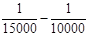 |
1 5000 |
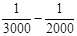 |
1 1000 |
||||||
|
А. Стальными рулетками |
||||||||||
|
Средняя квадратическая погрешность компарирования, мм |
- |
0,2 |
0,5 |
1,5 |
3 |
|||||
|
Уложение в створ |
- |
С помощью теодолита |
Глазомерно |
|||||||
|
Натяжение измерительного прибора, Н (кгс) |
- |
Динамометром, 100 (10) |
Вручную |
|||||||
|
Учет разности |
- |
Термометром |
||||||||
|
температур компарирования и измерения с погрешностью, °С |
1,5 |
3 |
5 |
10 |
||||||
|
Количество отсчетов |
- |
3 пары отсчетов и 2 сдвига |
2 пары отсчетов и 1 сдвиг |
1 пара отсчетов |
||||||
|
Фиксация центров знаков |
- |
Чертилкой |
Керном |
Карандашом |
Шпилькой |
|||||
|
Определение превышения концов измеряемой линии |
- |
Нивелированием |
Глазомерно |
|||||||
|
Типы рулеток по ГОСТ 7502-80 или им равноточные |
- |
ОПК2-20 АНТ/1, ОПК2-30 АНТ/1, ОПК2-50 AHT/1 |
ОПК3-20 АНТ/10, ОПК3-3О АНТ/10, ОПК3-50 АНТ/10 |
|||||||
|
Б. Светодальномерами или оптическими дальномерами |
||||||||||
|
Центрирование приборов |
Оптическим центриром |
Оптическим центриром или нитяным отвесом |
||||||||
|
Фиксация центров знаков |
Чертилкой |
Керном |
Карандашом |
Шпилькой |
||||||
|
Учет температуры |
Термометром |
- |
||||||||
|
Учет атмосферного давления |
Барометром |
- |
||||||||
|
Типы приборов по ГОСТ 19223-82 |
СП 3, СТ 3Н |
Д-2, ДНР-5 и модификации |
||||||||
|
Диапазон измерений, м |
2 - 3000 |
40-400, 20-120 |
||||||||
|
Условия измерений, типы приборов |
Средние квадратические погрешности превышения на станции, мм |
|||
|
1 |
2-3 |
5 |
10 |
|
|
Неравенство плеч на станции, м, не более |
4 |
7 |
10 |
15 |
|
Высота визирного луча над препятствием, м, не менее |
0,3 |
0,2 |
||
|
Типы нивелиров по ГОСТ 10528-76 или им равноточные |
Н-05 и модификации |
Н-3 и модификации |
Н-10 и модификации |
|
|
Типы реек для нивелиров по ГОСТ 11158-83 или им равноточные |
РН-05 |
РН-3 |
РН-10 |
|
|
Типы лазерных приборов или им равноточные |
- |
- |
ПИЛ-1 (ТУ ОДО.397.202); ЛВ-5М (ТУ 2.787.001); УКЛ-1 (ТУ ЛУ ШФ2.404.000) |
|
|
Типы реек для лазерных приборов |
- |
- |
Рейка с фотоприемником; РН-3 для ЛВ-5М |
|
|
Условия измерений, типы приборов |
Средние квадратические погрешности определения отметок на монтажном горизонте относительно исходного, мм |
||||
|
3 |
4 |
5 |
6 |
15 |
|
|
Высота монтажного горизонта, м |
До 15 |
Св. 15 до 60 |
Св. 60 до 100 |
Св. 100 до 120 |
- |
|
Неравенство плеч на станции, м, не более |
5 |
15 |
|||
|
Высота визирного луча над препятствием, м, не менее |
0,2 |
0,3 |
0,1 |
||
|
Методика работы |
Взятие отсчета на монтажном горизонте |
Одновременное взятие отсчетов на верхнем и нижнем горизонтах |
Взятие отсчета на монтажном горизонте |
||
|
Типы нивелиров, реек, теодолитов или им равноточные |
Н-3 и модификации, РН-3 |
H-05 и модификации; РН-05 |
Н-10 и модификации; РН-10; Т-5; Т-30 |
||
|
Типы рулеток |
ОПК2-20 АНТ/1, ОПК2-30 АНТ/1, ОПК2-50 АНТ/1 |
ОПК3-20 АНТ/10 |
|||
|
Натяжение рулеток, Н (кгс) |
100 (10) |
50 (5) |
|||
|
Процессы, условия измерений, тип приборов |
Средние квадратические погрешности передачи точек, осей по вертикали, мм |
|||
|
2 |
2,5 |
3 |
4 |
|
|
Высота проецирования, м |
До 15 |
Св. 15 до 60 |
Св. 60 до 100 |
Св. 100 до 120 |
|
Центрирование прибора |
Оптическим центриром или нитяным отвесом |
Оптическим центриром |
||
|
Фиксация точек |
Карандашом на гладкой поверхности, палетке |
Керном на исходном горизонте и карандашом по палетке |
||
|
Минимальное расстояние от визирного луча до строительной конструкции, м |
0,2 |
0,1 |
||
|
Количество приемов, не менее |
1 |
2 |
||
|
Типы приборов или им равноточные |
Т 30 |
Т 2, ПИЛ-1 |
ЦО-1, П3Л |
|
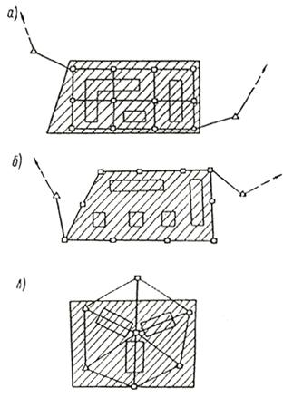
Черт. 1. Схемы разбивочной сети строительной площадки в виде
а - строительной сетки; б - красных линий; в - центральной системы
Условные обозначения:
ÿ - пункты разбивочной сети строительной площадки; D - пункты государственной геодезической сети; 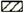
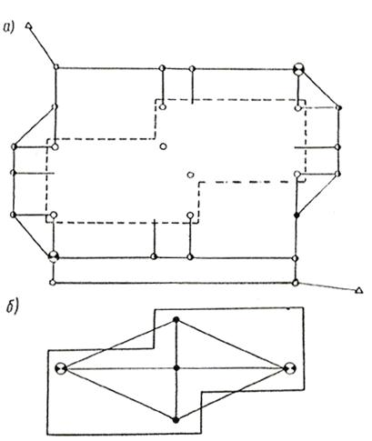
Черт. 2. Схемы разбивочной сети здания
а - внешней; б - внутренней
Условные обозначения:
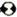 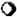
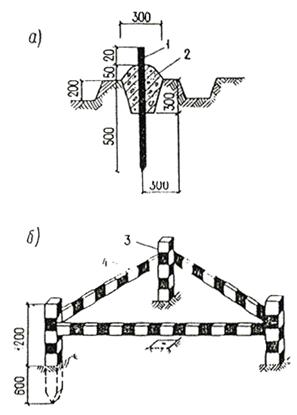
а - геодезический знак закрепления основных или главных разбивочных осей здания до 5 этажей, сооружения высотой до 15 м с продолжительностью строительства до 0,5 года, внутриплощадочных инженерных сетей: 1 - металлический стержень Æ16 мм; 2 - бетон класса В7,5; б - ограждение знака: 3 - деревянный столб размером 1800´80´80 мм или металлическая труба Æ30-50 мм; 4 - доска размером 1500´80´20 мм или металлический уголок размером 25´25´2 мм
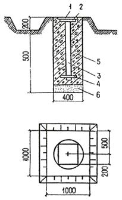
1 - деревянная крышка; 2 - металлическая пластина размером 200´200´10 мм; 3 - металлическая труба Æ30 мм; 4 - якорь; 5 - бетон класса В7,5; 6 - песок
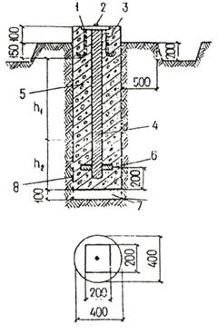
1 - металлическая пластина размером 200´200´15 мм; 2 - заклепка из металла; 3 -анкер Æ 15 мм; 4 - металлическая труба Æ 50-70 мм; 5 - бетон классов В7,5 - В12,5; 6 - якорь; 7 - песок; 8 - два слоя рубероида РЧ = 320; h1 соответствует наибольшей глубине промерзания грунта; h2 определяется по таблице
|
Грунт |
Значение величины h2 при глубине промерзания грунта, м |
||||||||
|
h1 |
0,6 |
0,8 |
1,0 |
1,2 |
1,4 |
1,6 |
1,8 |
2,0 |
|
|
Песчаный |
h2 |
0,1 |
0,2 |
0,2 |
0,3 |
0,4 |
0,5 |
0,6 |
0,7 |
|
Суглинистый |
0,6 |
0,9 |
1,1 |
1,4 |
1,6 |
1,8 |
2,0 |
2,1 |
|
Ограждение знака выполняется согласно рекомендуемому приложению 7
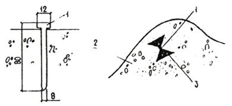
1 - дюбель-гвоздь; 2 - скала, бетон; 3 - обозначение знака (откраска)
Ограждение знака выполняется в виде тура из камней.
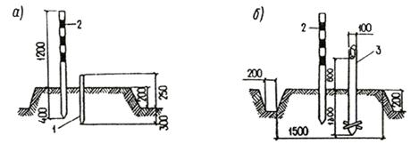
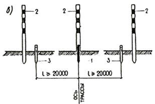
а, б - геодезические знаки; в - схема закрепления знаков разбивочных осей; 1 - временный знак из дерева или металла Æ 15-30 мм; 2 - опознавательная веха Æ 50 - 80 мм; 3 - постоянный знак из дерева Æ 100 мм или металла Æ 80 мм
|
________________________________________________________________________ (наименование объекта строительства) г._______________________________ "_____" ______________ 19 _____ г. Комиссия в составе: ответственного представителя заказчика _______________________________________ ________________________________________________________________________ (фамилия, инициалы, должность) ________________________________________________________________________ ответственных представителей генподрядной строительно-монтажной организации ________________________________________________________________________ (фамилия, инициалы, должность) ___________________________________________________________ рассмотрела представленную техническую документацию на геодезическую разбивочную основу для строительства _______________________________________ ________________________________________________________________________ (наименование объекта строительства) и произвела осмотр закрепленных на местности знаков этой основы. Предъявленные к приемки знаки геодезической разбивочной основы для строительства, их координаты, отметки, места установки и способы закрепления соответствуют представленной технической документации ________________________________________________________________________ (наименование проектной организации, ________________________________________________________________________ номера чертежей, дата выпуска) и выполнены с соблюдением заданной точности построений и измерений. На основании изложенного комиссия считает, что заказчик сдал, а подрядчик принял знаки геодезической разбивочной основы для строительства (наименование объекта или его отдельных цехов, зданий, сооружений) Приложения: ___________________________________________________________ (чертежи, схемы, ведомости и т. п.) ________________________________________________________________________ Представитель заказчика: __________________________________ (подпись) Представители подрядчика: производитель работ __________________________________ (подпись) Работник геодезической службы __________________________________ (подпись) |
|
"____" _______________ 19___г. ____________________________________________ (место составления) Объект __________________________________________________________________ (наименование объекта строительства) Комиссия в составе: ответственного представителя строительно-монтажной организации, передающей работы __________________________________________________________________ (фамилия, инициалы, должность) ответственного представителя строительно-монтажной организации, принимающей работы __________________________________________________________________ (фамилия, инициалы, должность) рассмотрела представленную техническую документацию на выполненные геодезические работы (схемы геодезической разбивочной основы для строительства, внутренней разбивочной сети здания, сооружения, схемы исполнительных съемок, каталоги координат, отметок, ведомости и т.д.) при строительстве ________________________________________________________________________ (наименование объекта) и произвела осмотр закрепленных на местности и здании знаков сети. Предъявленные к приемке знаки разбивочной сети, их координаты, отметки, места установки и способы закрепления соответствуют представленной на них технической документации, и работы выполнены с соблюдением заданной точности построений и измерений. На основании изложенного комиссия считает, что ответственный представитель строительно-монтажной организации _________________________________________ ________________________________________________________________________ (наименование организации) сдал, а представитель строительно-монтажной организации _______________________ ________________________________________________________________________ (наименование организации) принял указанные выше работы по ___________________________________________ ________________________________________________________________________ (наименование объекта, отдельных частей зданий и сооружений) Приложения: _____________________________________________________________ (чертежи, схемы, ведомости и т.д.) Представитель строительно-монтажной организации, передающей работы ________________________________________________________________________ (подписи производителя работ, ________________________________________________________________________ работника геодезической службы) Представитель строительно-монтажной организации, принимающей работы ________________________________________________________________________ (подписи производители работ, ________________________________________________________________________ работника геодезической службы) |
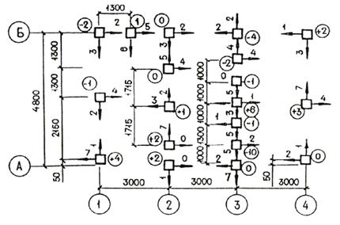
Стрелка показывает направление отклонения оголовка сваи от оси, а цифра - величину, см.
Цифра со знаком в кружке показывает отклонение от проектной отметки оголовка сваи после срубки, см.
У круглых свай показывается отклонение от осей центра оголовка, у остальных - граней.
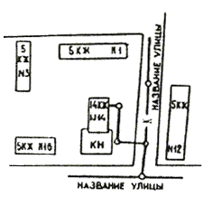
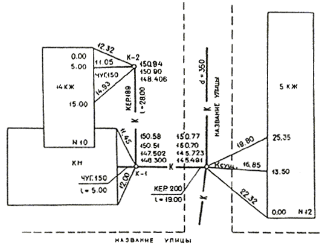
СОДЕРЖАНИЕ